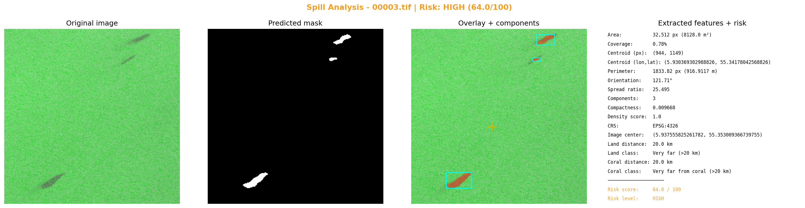

مركز الصورة: lon=5.937555825261782, lat=55.353009366739755
مركز التسرب: lon=5.930369302988826, lat=55.34178042568826
التاريخ: 2023-01-13 20:55:47
التحليل البصري

التقرير
**تقرير تحليل تسرب نفطي باستخدام صور الأقمار الاصطناعية SAR**
١. الملخص التنفيذي
تم تحليل صورة الأقمر الصناعي SAR لتحديد موقع وتقييم خطورة تسرب نفطي في منطقة محددة. النتائج تشير إلى أن التسرب يقع على بعد 20 كم من اليابسة و20 كم من الشعب المرجانية، ويعتبر خطراً عالياً (HIGH) بنسبة 64% من المخاطر الكلية.
٢. الموقع الجغرافي والتاريخ
* نظام الإحداثيات: EPSG:4326
* مركز الصورة: lon=5.937555825261782, lat=55.353009366739755
* مركز التسرب: lon=5.930369302988826, lat=55.34178042568826
* التاريخ: 2023-01-13 20:55:47
٣. الوصف الهندسي للتسرب
* المساحة: 32,512 بكسل (8128.0 م²)
* نسبة التغطية: 0.78%
* المحيط: 1833.82 بكسل (916.9117 م)
* مركز البقعة (بكسل): (944, 1149)
* زاوية التوجّه: 121.71°
* نسبة الامتداد: 25.495
* معامل الانضغاط: 0.009668
* عدد البقع المنفصلة: 3
٤. القرب من اليابسة والشعب المرجانية والأثر البيئي
* المسافة من اليابسة: 20 كم (Very far)
* المسافة من الشعب المرجانية: 20 كم (Very far from coral)
٥. تقييم الخطورة
* Risk Score: 64.0 / 100
* Risk Level: HIGH
* العوامل:
+ coverage 0.78% → MINIMAL (<2%)
+ spread_ratio 25.495 → CRITICAL (>=10)
+ components 3 → HIGH
+ density 1.0 → CRITICAL
+ land 20.0 كم → LOW
+ coral 20.0 كم → LOW
٦. التوصيات
* توجيهات لفرق الطوارئ للقيام بعمليات إجلاء السكان من المنطقة.
* توجيهات لفرق مكافحة الحرائق للعمل على استكشاف وتحديد حجم التسرب.
* توجيهات لفرق الصحة العامة للعمل على تقديم الرعاية الطبية للمواطنين المتأثرين بالتسرب.
٧. الملاحظات
* يتعين على فرق مكافحة الحرائق العمل بسرعة لتقليل حجم التسرب.
* يجب توفير الرعاية الطبية للشعب المحلي المتأثرين بالتسرب.
* يتعين على السلطات المختصة العمل على تقديم المعلومات للمواطنين حول خطورة التسرب.